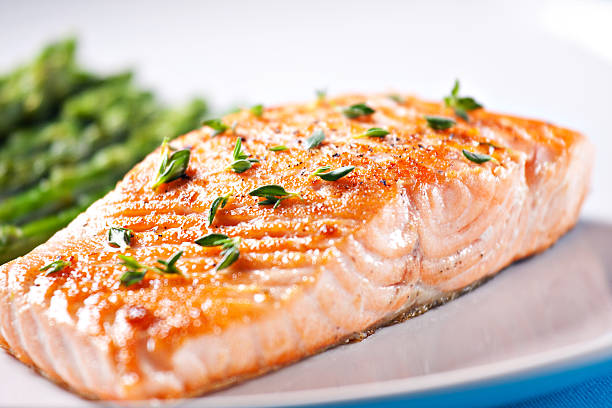

Oven-Baked Salmon

Ingredients
Salmon Fillet
Old Bay Seasoning
- to taste
Salt
- to taste
Pepper
- to taste
Instructions
Preheat oven to 425 degrees Fahrenheit.
Season the salmon with the aforementioned ingredients.
Bake Salmon for 15-20 minutes.
Similar Recipes
Baked Salmon Fillet